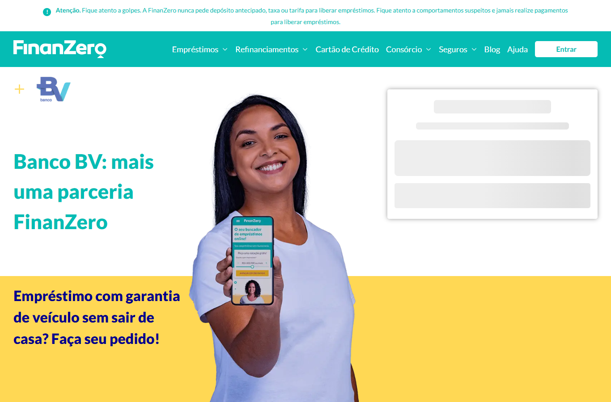

SIMIO · dossiê de candidato · campanha simio-20261118-184932-cc75 · gerado em 2026-11-18T20:44:56+00:00
https://finanzero.com.br/parceiros-banco-bv/
NO_INDICATION Prioridade LOW · Cenário A_LEGITIMATE_COMMERCIAL_MENTION · Revisão humana: NOT_REQUIRED
Este dossiê apresenta indícios para apoio à auditoria. Não constitui conclusão regulatória. As conclusões automatizadas devem ser verificadas contra as evidências brutas abaixo (screenshots, catálogo e arquivos com hash). Conteúdo de terceiros é exibido como texto; links não são clicáveis por segurança.
A página analisada pertence ao buscador de crédito e correspondente bancário FinanZero (finanzero.com.br) e divulga de maneira transparente sua parceria comercial com o Banco BV. Toda a identidade visual, cabeçalho, canais de atendimento e textos deixam claro que o consumidor está no ambiente da FinanZero, que atua como intermediadora/correspondente. Além disso, o rodapé contém declaração explícita de atuação como correspondente bancário segundo a Resolução CMN nº 4.935/2021, listando o Banco Votorantim S.A. (CNPJ 59.588.111/0001-03) entre as instituições parceiras. Trata-se, portanto, de menção comercial legítima sem indícios de confusão de marca. [Revisor: DOWNGRADE] A análise qualitativa do analista está correta ao apontar que se trata de menção comercial legítima de correspondente bancário, sem indícios de uso indevido ou confusão de marca. A classificação REVIEW_REQUIRED decorreu apenas de um falso positivo das regras determinísticas (que buscaram 'Banco BV' na declaração de correspondente, enquanto o texto traz a razão social oficial 'Banco Votorantim S.A. – CNPJ/ME 59.588.111/0001-03' em E-TXT-018). Como a página identifica claramente a FinanZero no domínio, topo e rodapé, explica a relação de parceria em terceira pessoa e cumpre a transparência de correspondente bancário, aplica-se o DOWNGRADE para NO_INDICATION e prioridade LOW.

| Ref | Tipo | Local | Conteúdo |
|---|---|---|---|
| E-URL | domain | url | URL final: https://finanzero.com.br/parceiros-banco-bv/ (domínio: finanzero.com.br) |
| E-COLLECT | network | collection | Status da coleta: OK; HTTP 200; ocorrências: network did not become idle (continuing) |
| E-SHOT-VIEWPORT | screenshot | viewport | evidence\Cd8c2c43f7d\attempt-1\viewport.png (sha256 53fe251d09fd1a60…) |
| E-SHOT-FULL | screenshot | page | evidence\Cd8c2c43f7d\attempt-1\fullpage.png (sha256 a3f61c4eafcd34de…) |
| E-TITLE | title | head | BV Financeira: Refinanciamento de Veículo Online - FinanZero |
| E-META-1 | meta | head | description: Precisa de um empréstimo rápido e seguro? Com a FinanZero+BV Finaceira você faz uma simulação e tem as melhores opções. Faça sua simulação e descubra! |
| E-META-2 | meta | head | og:site_name: FinanZero |
| E-META-3 | meta | head | og:title: BV Financeira: Refinanciamento de Veículo Online - FinanZero |
| E-META-4 | meta | head | og:description: Precisa de um empréstimo rápido e seguro? Com a FinanZero+BV Finaceira você faz uma simulação e tem as melhores opções. Faça sua simulação e descubra! |
| E-CANONICAL | meta | head | https://finanzero.com.br/parceiros-banco-bv/ |
| E-HEAD-1 | heading | page | Banco BV: mais uma parceria FinanZero |
| E-HEAD-2 | heading | page | Conheça a parceira Banco BV |
| E-HEAD-3 | heading | page | Quem é o Banco BV? |
| E-HEAD-4 | heading | page | Por que confiar na parceria Banco BV e FinanZero? |
| E-HEAD-5 | heading | page | Conheça outros produtos |
| E-HEAD-6 | heading | page | Empréstimo com Garantia Online |
| E-HEAD-7 | heading | page | Empréstimo Pessoal Online |
| E-HEAD-8 | heading | page | Empréstimo com garantia de veículo |
| E-HEAD-9 | heading | page | Blog Finanzero, tudo sobre empréstimos e dinheiro |
| E-HEAD-10 | heading | page | As melhores dicas de empréstimo você encontra aqui |
| E-HEAD-11 | heading | page | Perguntas frequentes sobre empréstimo pessoal online |
| E-HEAD-12 | heading | page | A FinanZero cobra pelo serviço de busca de empréstimos? |
| E-HEAD-13 | heading | page | Como solicitar o refinanciamento de veículo online com a FinanZero? |
| E-HEAD-14 | heading | page | Como desbloquear a câmera do celular? |
| E-HEAD-15 | heading | page | Em quantas vezes posso pagar pelo empréstimo online da FinanZero? |
| E-HDR | text | header | ! Atenção. Fique atento a golpes. A FinanZero nunca pede depósito antecipado, taxa ou tarifa para liberar empréstimos. Fique atento a comportamentos suspeitos e jamais realize pagamentos para liberar empréstimos. Empréstimos Refinanciamentos Cartão de Crédito Consórcio Seguros Blog Ajuda Entrar | A FinanZero cobra pelo serviço de busca de empréstimos? | Como solicitar o refinanciamento de veículo online com a FinanZero? | Como desbloquear a câmera do celular? | Em quantas vezes posso pagar pelo empréstimo online da FinanZero? | O que é necessário para fazer um pedido de refinanciamento de veículo na FinanZero? |
| E-FOLD | text | viewport (acima da dobra) | ! Atenção. Fique atento a golpes. A FinanZero nunca pede depósito antecipado, taxa ou tarifa para liberar empréstimos. Fique atento a comportamentos suspeitos e jamais realize pagamentos para liberar empréstimos. Empréstimos Refinanciamentos Cartão de Crédito Consórcio Seguros Blog Ajuda Entrar Banco BV: mais uma parceria FinanZero Empréstimo com garantia de veículo sem sair de casa? Faça seu pedido! |
| E-FTR | text | footer | INSTITUCIONAL Sobre nós Ajuda Termos e condições de uso Mapa do site Índice de Empréstimo Årsstämma CONSÓRCIO Consórcio Consórcio de imóvel Consórcio de veículo Consórcio de serviços Consórcio para cirurgias plásticas Consórcio de cursos Consórcio para intercâmbio Consórcio para festas Revenda de consórcios EMPRÉSTIMO Empréstimo Pessoal Online Simule seu empréstimo Empréstimo para Negativado Empréstimo para Autônomo Negativado Empréstimo com Garantia Empréstimo FGTS Empréstimo Consignado INSS Financiamento Imobiliário Empréstimo para MEI Empréstimo para empresas REFINANCIAMENTO Refinanciamento de Veículos Refinanciamento de Imóvel Empréstimo com Garantia Empréstimo com Garantia de Imóvel Empréstimo com Garantia de Veículo Empréstimo com Garantia de Celular CARTÃO DE CRÉDITO Cartão de Crédito SEGUROS Seguro de Automóvel BLOG Finanças Pessoais Impostos Mercado Negócios Crédito Benefícios do Governo PARCEIROS BV CREDITAS JBCRED OMNI NOVERDE SUPER SIM SIMPLIC CREFAZ Outros parceiros FinanZero Brasil Serviços Online Ltda. CNPJ/MF 23.722.194/0001-34 Alameda Mamoré, 687 | CJ 501 SALA 05-123 ANDAR 5 Alphaville - CEP: 06454-040 Tem uma sugestão? Envie um e-mail para atendimento@finanzero.com.br Assessoria de imprensa assessoria@finanzero.com.br 0800 607-3001 Segunda a Sexta - 9h às 18h SIGA A GENTE A FinanZero consulta mais de 40 instituições financeiras. Os prazos para pagamento variam de 6 a 36 meses por produto e Instituição financeira escolhida pelo cliente. A taxa de juros oferecida pelos parceiros varia de 1,49% a.m. a 18,01% a.m. Exemplo: Valor: R$ 5.000,00; prazo: 12 meses; Taxa de Juros: 2,9% a.m.; CET 64,4% a.a.; Parcelas R$ 500,44; Valor total com IOF incluso: R$ 6.005,28. A FinanZero Brasil Serviços Online Ltda. (CNPJ/MF 23.722.194/0001-34), com sede na Alameda Mamoré, 687, CJ 501 SALA 05-123 ANDAR 5, Alphaville – CEP: 06454-040, é um buscador de crédito correspondente bancário que atua conforme as diretrizes da Resolução CMN nº 4.935/2021 do Banco Central do Bra |
| E-NAV | nav | header | Voltar para a página inicial <https://finanzero.com.br/> | Empréstimos <https://finanzero.com.br/parceiros-banco-bv/#> | Refinanciamentos <https://finanzero.com.br/parceiros-banco-bv/#> | Cartão de Crédito <https://finanzero.com.br/cartao-credito/> | Consórcio <https://finanzero.com.br/consorcio/> | Seguros <https://finanzero.com.br/parceiros-banco-bv/#> | Blog <https://finanzero.com.br/blog/> | Ajuda <https://finanzero.com.br/ajuda/> | Entrar <https://finanzero.com.br/me/> |
| E-CTA-1 | cta | page | SOLICITE SEU EMPRÉSTIMO AQUI <https://finanzero.com.br/parceiros-banco-bv/#peca-agora> |
| E-CONTACT-1 | contact | footer | atendimento@finanzero.com.br <mailto:atendimento@finanzero.com.br> |
| E-CONTACT-2 | contact | footer | assessoria@finanzero.com.br <mailto:assessoria@finanzero.com.br> |
| E-CONTACT-3 | contact | footer | 0800 607-3001 <tel:08006073001> |
| E-CONTACT-4 | contact | footer | Facebook <https://www.facebook.com/finanzero/> |
| E-CONTACT-5 | contact | footer | Instagram <https://www.instagram.com/finanzero/> |
| E-CONTACT-6 | contact | footer | encarregado.DPO@finanzero.com.br <mailto:encarregado.DPO@finanzero.com.br> |
| E-TXT-001 | text | page | Banco BV: mais uma parceria FinanZero |
| E-TXT-002 | text | page | Conheça a parceira Banco BV |
| E-TXT-003 | text | page | A parceria entre a FinanZero e o Banco BV foi criada para tornar o processo de contratação de crédito ainda mais fácil, rápido e seguro. Através da plataforma da FinanZero, é possível simular, comparar e solicitar empréstimos oferecidos pelo BV sem sair de casa. É tecnologia e confiança trabalhando juntas para oferecer soluções financeiras sob medida para você. |
| E-TXT-004 | text | page | Quem é o Banco BV? |
| E-TXT-005 | text | page | O Banco BV é uma das maiores instituições financeiras privadas do Brasil, com mais de 30 anos de atuação. Reconhecido por sua solidez e inovação, o BV oferece uma ampla variedade de produtos e serviços, como crédito pessoal, financiamento de veículos, cartões, investimentos e muito mais. O banco se destaca por unir tecnologia, agilidade e foco na experiência do cliente. |
| E-TXT-006 | text | page | Por que confiar na parceria Banco BV e FinanZero? |
| E-TXT-007 | text | page | A FinanZero reúne os melhores parceiros do mercado para garantir ofertas de crédito seguras, transparentes e com as melhores condições. O Banco BV é uma instituição consolidada, regulada pelo Banco Central e com um histórico sólido no setor financeiro. Ao unir a expertise digital da FinanZero com a credibilidade do BV, essa parceria entrega praticidade, segurança e confiança em cada etapa da sua |
| E-TXT-008 | text | page | PARCEIROS |
| E-TXT-009 | text | page | BV |
| E-TXT-010 | text | page | Outros parceiros |
| E-TXT-011 | text | page | FinanZero Brasil Serviços Online Ltda. CNPJ/MF 23.722.194/0001-34 |
| E-TXT-012 | text | page | Alameda Mamoré, 687 | CJ 501 SALA 05-123 ANDAR 5 Alphaville - CEP: 06454-040 |
| E-TXT-013 | text | page | atendimento@finanzero.com.br |
| E-TXT-014 | text | page | A FinanZero consulta mais de 40 instituições financeiras. Os prazos para pagamento variam de 6 a 36 meses por produto e Instituição financeira escolhida pelo cliente. A taxa de juros oferecida pelos parceiros varia de 1,49% a.m. a 18,01% a.m. Exemplo: Valor: R$ 5.000,00; prazo: 12 meses; Taxa de Juros: 2,9% a.m.; CET 64,4% a.a.; Parcelas R$ 500,44; Valor total com IOF incluso: R$ 6.005,28. |
| E-TXT-015 | text | page | A FinanZero Brasil Serviços Online Ltda. (CNPJ/MF 23.722.194/0001-34), com sede na Alameda Mamoré, 687, CJ 501 SALA 05-123 ANDAR 5, Alphaville – CEP: 06454-040, é um buscador de crédito correspondente bancário que atua conforme as diretrizes da Resolução CMN nº 4.935/2021 do Banco Central do Brasil. |
| E-TXT-016 | text | page | Atuamos como correspondente bancário das seguintes instituições financeiras, as propostas são analisadas e o crédito concedido diretamente pelas instituições: Creditas Soluções Financeiras – CNPJ 17.770.708/0001-24; Open Co Correspondente Bancário Ltda. – CNPJ 20.955.843/0001-59; Aymoré Crédito, Financiamento e Investimento S.A – CNPJ 07.707.650/0001-10; Banco Digio S.A..- CNPJ |
| E-TXT-017 | text | page | 27.098.060/0001-45 – SAC Digio: 0800 333 8735 | 0800 333 8736 – Deficientes auditivos | funciona 24h e caso não fique satisfeito: Ouvidoria Digio – 0800 333 1474 de segunda a sexta-feira, das 10h00 às 16h00; Bcredi Servicos de Credito e Cobranca S.A- CNPJ 31.105.806/0001-78; Lh1010 Serviços de Correspondente Bancário Ltda – CNPJ 17.103.297/0001-13; Id Finance Brasil Ltda – CNPJ |
| E-TXT-018 | text | page | 23.474.341/0001-02; Rebel tecnologia e correspondente bancário LTDA – CNPJ 23.563.189/0001-26; Banco Votorantim S.A. – CNPJ/ME 59.588.111/0001-03; Noverde tecnologia e pagamentos S/A: CNPJ 07.652.226/0001-16; Provu Serviços de Administração e Correspondente Bancário S.A. CNPJ 20.265.259/0001-71; SuperSim Analise de Dados e Correspondente Bancário Ltda. CNPJ 33.030.944/0001-60; FC Financeira S/A – |
| E-TXT-019 | text | page | Crédito, Financiamento e Investimento CNPJ 36.538.700/0001-01; Portocred S/A Crédito, Financiamento e Investimento, CNPJ 01.800.019/0001-85; Easyc Promotora de Serviços Financeiros e Corretagem de Seguros Online Ltda. CNPJ 24.081.684/0001-61; Virtus Tech Tecnologia e Serviços SA (“VirtusPay”) CNPJ 27.148.375/0001-50; Financeira Alfa S A Crédito Financiamento e Investimentos CNPJ |
| E-TXT-020 | text | page | 17.167.412/0001-13; Banco PAN S.A. CNPJ 59.285.411/0001-13; Omni S/A – Crédito, Financiamento e Investimento. CNPJ 92.228.410/0001-02; Click Cash (Crédito 24 Ltda), CNPJ 35.408.438/0001-98; Banco Bari de Investimentos e Financiamentos S/A (CNPJ 00.556.603/0001-74) e Bari Companhia Hipotecária (CNPJ 14.511.781/0001-93); Itaú Unibanco Holding S.A. CNPJ: 60.872.504/0001-23; Banco Rodobens S.A CNPJ: |
| E-TXT-021 | text | page | 33.603.457/0001-40; Koin Administradora de Cartões e Meios de Pagamento S.A. – CNPJ 17.991.841/0001-00. |
| Dimensão | Sinal | Achado | Refs |
|---|---|---|---|
| VISUAL_IDENTITY | LEGITIMATE | A página utiliza de forma predominante a identidade visual própria da FinanZero (cores verde e amarelo, logotipo FinanZero no cabeçalho e rodapé), diferenciando-se claramente da identidade institucional do Banco BV. | E-SHOT-VIEWPORT E-SHOT-FULL E-HDR |
| DECLARED_COMMERCIAL_IDENTITY | LEGITIMATE | O estabelecimento identifica-se claramente como FinanZero (FinanZero Brasil Serviços Online Ltda., CNPJ 23.722.194/0001-34) em domínio próprio (finanzero.com.br), no título, cabeçalho, corpo do texto e rodapé. | E-URL E-TITLE E-TXT-011 E-FTR |
| CORRESPONDENT_TRANSPARENCY | LEGITIMATE | A comunicação destaca desde o título principal que se trata de uma parceria ('Banco BV: mais uma parceria FinanZero') e apresenta no rodapé declaração expressa de atuação como correspondente bancário nos termos da Resolução CMN nº 4.935/2021, listando o Banco Votorantim S.A. (CNPJ 59.588.111/0001-03) entre as instituições parceiras. | E-HEAD-1 E-TXT-003 E-TXT-015 E-TXT-016 E-TXT-018 E-FTR |
| INSTITUTIONAL_LANGUAGE | LEGITIMATE | A linguagem utilizada fala sobre o Banco BV em terceira pessoa ('Quem é o Banco BV?', 'Através da plataforma da FinanZero, é possível simular, comparar e solicitar empréstimos oferecidos pelo BV'), sem reivindicar ser canal oficial do banco. | E-HEAD-2 E-HEAD-3 E-TXT-003 E-TXT-005 E-TXT-007 |
| LOGO_USAGE | LEGITIMATE | O logotipo do Banco BV aparece na seção principal acompanhado do sinal '+' e do título 'Banco BV: mais uma parceria FinanZero', contextualizado como instituição parceira dentro da plataforma da FinanZero. | E-SHOT-VIEWPORT E-SHOT-FULL E-HEAD-1 |
| SERVICE_JOURNEY | LEGITIMATE | O fluxo de cotação ('Peça uma cotação grátis!') e o conteúdo explicativo deixam explícito que o usuário está utilizando o buscador de empréstimos da FinanZero para consultar ofertas de parceiros, incluindo o Banco BV. | E-SHOT-FULL E-TXT-003 E-TXT-014 E-CTA-1 |
| CONTACT_CHANNELS | LEGITIMATE | Todos os canais de contato e redes sociais divulgados são claramente vinculados ao domínio e à marca FinanZero (atendimento@finanzero.com.br, 0800 607-3001, perfis @finanzero). | E-CONTACT-1 E-CONTACT-2 E-CONTACT-3 E-CONTACT-4 E-CONTACT-5 E-FTR |
| CONSUMER_CONFUSION | LEGITIMATE | Não há indícios de confusão para o consumidor; a página distingue com clareza a plataforma intermediadora (FinanZero) da instituição financeira parceira (Banco BV). | E-SHOT-VIEWPORT E-SHOT-FULL E-TXT-003 E-TXT-015 |
A página analisada pertence ao buscador de crédito e correspondente bancário FinanZero (finanzero.com.br) e divulga de maneira transparente sua parceria comercial com o Banco BV. Toda a identidade visual, cabeçalho, canais de atendimento e textos deixam claro que o consumidor está no ambiente da FinanZero, que atua como intermediadora/correspondente. Além disso, o rodapé contém declaração explícita de atuação como correspondente bancário segundo a Resolução CMN nº 4.935/2021, listando o Banco Votorantim S.A. (CNPJ 59.588.111/0001-03) entre as instituições parceiras. Trata-se, portanto, de menção comercial legítima sem indícios de confusão de marca.
A página declara atuação como correspondente/prestador e identifica a empresa, mas não houve confirmação em cadastro autorizado.
| Tipo | Valor | Ref | Contexto |
|---|---|---|---|
| domain | finanzero.com.br | E-URL | |
| cnpj | 23.722.194/0001-34 | E-FTR | V CREDITAS JBCRED OMNI NOVERDE SUPER SIM SIMPLIC CREFAZ Outros parceiros FinanZero Brasil Serviços Online Ltda. CNPJ/MF 23.722.194/0001-34 |
| cnpj | 17.770.708/0001-24 | E-TXT-016 | as propostas são analisadas e o crédito concedido diretamente pelas instituições: Creditas Soluções Financeiras – CNPJ 17.770.708/0001-24 |
| cnpj | 20.955.843/0001-59 | E-TXT-016 | ; Open Co Correspondente Bancário Ltda. – CNPJ 20.955.843/0001-59 |
| cnpj | 07.707.650/0001-10 | E-TXT-016 | ; Aymoré Crédito, Financiamento e Investimento S.A – CNPJ 07.707.650/0001-10 |
| cnpj | 27.098.060/0001-45 | E-TXT-017 | 27.098.060/0001-45 |
| cnpj | 31.105.806/0001-78 | E-TXT-017 | ria Digio – 0800 333 1474 de segunda a sexta-feira, das 10h00 às 16h00; Bcredi Servicos de Credito e Cobranca S.A- CNPJ 31.105.806/0001-78 |
| cnpj | 17.103.297/0001-13 | E-TXT-017 | ; Lh1010 Serviços de Correspondente Bancário Ltda – CNPJ 17.103.297/0001-13 |
| cnpj | 23.474.341/0001-02 | E-TXT-018 | 23.474.341/0001-02 |
| cnpj | 23.563.189/0001-26 | E-TXT-018 | ; Rebel tecnologia e correspondente bancário LTDA – CNPJ 23.563.189/0001-26 |
| cnpj | 59.588.111/0001-03 | E-TXT-018 | ; Banco Votorantim S.A. – CNPJ/ME 59.588.111/0001-03 |
| cnpj | 07.652.226/0001-16 | E-TXT-018 | ; Noverde tecnologia e pagamentos S/A: CNPJ 07.652.226/0001-16 |
| cnpj | 20.265.259/0001-71 | E-TXT-018 | ; Provu Serviços de Administração e Correspondente Bancário S.A. CNPJ 20.265.259/0001-71 |
| cnpj | 33.030.944/0001-60 | E-TXT-018 | ; SuperSim Analise de Dados e Correspondente Bancário Ltda. CNPJ 33.030.944/0001-60 |
| cnpj | 36.538.700/0001-01 (dígito inválido) | E-TXT-019 | Crédito, Financiamento e Investimento CNPJ 36.538.700/0001-01 |
| cnpj | 01.800.019/0001-85 | E-TXT-019 | ; Portocred S/A Crédito, Financiamento e Investimento, CNPJ 01.800.019/0001-85 |
| cnpj | 24.081.684/0001-61 | E-TXT-019 | ; Easyc Promotora de Serviços Financeiros e Corretagem de Seguros Online Ltda. CNPJ 24.081.684/0001-61 |
| cnpj | 27.148.375/0001-50 | E-TXT-019 | ; Virtus Tech Tecnologia e Serviços SA (“VirtusPay”) CNPJ 27.148.375/0001-50 |
| cnpj | 17.167.412/0001-13 | E-TXT-020 | 17.167.412/0001-13 |
| cnpj | 59.285.411/0001-13 | E-TXT-020 | ; Banco PAN S.A. CNPJ 59.285.411/0001-13 |
| cnpj | 92.228.410/0001-02 | E-TXT-020 | ; Omni S/A – Crédito, Financiamento e Investimento. CNPJ 92.228.410/0001-02 |
| cnpj | 35.408.438/0001-98 | E-TXT-020 | ; Click Cash (Crédito 24 Ltda), CNPJ 35.408.438/0001-98 |
| cnpj | 00.556.603/0001-74 | E-TXT-020 | ; Banco Bari de Investimentos e Financiamentos S/A (CNPJ 00.556.603/0001-74 |
| cnpj | 14.511.781/0001-93 | E-TXT-020 | ) e Bari Companhia Hipotecária (CNPJ 14.511.781/0001-93 |
| cnpj | 60.872.504/0001-23 | E-TXT-020 | ); Itaú Unibanco Holding S.A. CNPJ: 60.872.504/0001-23 |
| cnpj | 33.603.457/0001-40 | E-TXT-021 | 33.603.457/0001-40 |
| cnpj | 17.991.841/0001-00 | E-TXT-021 | ; Koin Administradora de Cartões e Meios de Pagamento S.A. – CNPJ 17.991.841/0001-00 |
| legal_name | FinanZero Brasil Serviços Online Ltda | E-FTR | |
| legal_name | A FinanZero Brasil Serviços Online Ltda | E-FTR | |
| atendimento@finanzero.com.br | E-FTR | ||
| assessoria@finanzero.com.br | E-FTR | ||
| social_profile | https://www.facebook.com/finanzero/ | E-CONTACT-4 | |
| social_profile | https://www.instagram.com/finanzero/ | E-CONTACT-5 | |
| encarregado.DPO@finanzero.com.br | E-CONTACT-6 | ||
| legal_name | Open Co Correspondente Bancário Ltda | E-TXT-016 | |
| legal_name | Financiamento e Investimento S.A | E-TXT-016 | |
| legal_name | Banco Digio S.A | E-TXT-016 | |
| legal_name | Bcredi Servicos de Credito e Cobranca S.A | E-TXT-017 | |
| legal_name | Lh1010 Serviços de Correspondente Bancário Ltda | E-TXT-017 | |
| legal_name | Id Finance Brasil Ltda | E-TXT-017 | |
| institution_name_displayed | Banco Votorantim S.A | E-TXT-018 | |
| legal_name | Provu Serviços de Administração e Correspondente Bancário S.A | E-TXT-018 | |
| legal_name | SuperSim Analise de Dados e Correspondente Bancário Ltda | E-TXT-018 | |
| legal_name | FC Financeira S/A | E-TXT-018 | |
| legal_name | Portocred S/A | E-TXT-019 | |
| legal_name | Easyc Promotora de Serviços Financeiros e Corretagem de Seguros Online Ltda | E-TXT-019 | |
| legal_name | Banco PAN S.A | E-TXT-020 | |
| legal_name | Omni S/A | E-TXT-020 | |
| legal_name | Crédito 24 Ltda | E-TXT-020 | |
| legal_name | Banco Bari de Investimentos e Financiamentos S/A | E-TXT-020 | |
| legal_name | Itaú Unibanco Holding S.A | E-TXT-020 | |
| legal_name | Banco Rodobens S.A | E-TXT-020 | |
| legal_name | Koin Administradora de Cartões e Meios de Pagamento S.A | E-TXT-021 | |
| trade_name | FinanZero | E-META-2 | |
| phone | 0800 607-3001 | E-FTR | |
| phone | 08006073001 | E-CONTACT-3 | |
| phone | 0800 333 8735 | E-TXT-017 | |
| phone | 0800 333 8736 | E-TXT-017 | |
| phone | 0800 333 1474 | E-TXT-017 | |
| correspondent_declaration | correspondente bancário | E-FTR | INSTITUCIONAL Sobre nós Ajuda Termos e condições de uso Mapa do site Índice de Empréstimo Årsstämma CONSÓRCIO Consórcio Consórcio de imóvel Consórcio de veículo Consórcio de serviços Consórcio para ci |
| correspondent_declaration | Resolução CMN nº 4.935 | E-FTR | INSTITUCIONAL Sobre nós Ajuda Termos e condições de uso Mapa do site Índice de Empréstimo Årsstämma CONSÓRCIO Consórcio Consórcio de imóvel Consórcio de veículo Consórcio de serviços Consórcio para ci |
| correspondent_declaration | Atuamos como correspondente | E-TXT-016 | Atuamos como correspondente bancário das seguintes instituições financeiras, as propostas são analisadas e o crédito concedido diretamente pelas instituições: Creditas Soluções Financeiras – CNPJ 17. |
| partnership_declaration | parceiros | E-CANONICAL | https://finanzero.com.br/parceiros-banco-bv/ |
| partnership_declaration | parceria | E-HEAD-1 | Banco BV: mais uma parceria FinanZero |
| partnership_declaration | parceira | E-HEAD-2 | Conheça a parceira Banco BV |
Mapeamento indicativo para apoio à auditoria. Não constitui conclusão regulatória; a decisão definitiva pertence à auditoria.
Fonte: NORMATIVE
Art. 14. O contrato de correspondente deve estabelecer: [...] II - vedação à utilização, pelo contratado, de logomarca ou de outros atributos que sejam similares aos adotados pela instituição contratante em suas agências, postos de atendimento, sítio eletrônico na internet, aplicativo ou outras plataformas de comunicação em rede;
Evidência observada: E-HDR E-HEAD-1 E-SHOT-FULL E-SHOT-VIEWPORT
Fonte: NORMATIVE
Art. 14. O contrato de correspondente deve estabelecer: [...] III - divulgação ao público, pelo contratado, de sua condição de prestador de serviços à instituição contratante, identificada pelo nome com que é conhecida no mercado, com descrição dos produtos e serviços oferecidos e canais de contato da instituição contratante, inclusive de sua ouvidoria, em local visível, em destaque e em formato legível, por meio de: a) sítio eletrônico do correspondente na internet, acessível na página inicial; b) aplicativo e outras plataformas de comunicação em rede do correspondente; [...]
Evidência observada: E-CONTACT-1 E-CONTACT-2 E-CONTACT-3 E-CONTACT-4 E-CONTACT-5 E-FTR E-HEAD-1 E-HEAD-2 E-HEAD-3 E-SHOT-FULL E-SHOT-VIEWPORT E-TITLE E-TXT-003 E-TXT-005 E-TXT-007 E-TXT-011 E-TXT-015 E-TXT-016 E-TXT-018 E-URL
Fonte: NORMATIVE
Art. 3º O correspondente atua por conta e sob as diretrizes da instituição contratante, que assume inteira responsabilidade pelo atendimento prestado aos clientes e usuários por meio do contratado.
Evidência observada: E-CONTACT-1 E-CONTACT-2 E-CONTACT-3 E-CONTACT-4 E-CONTACT-5 E-CTA-1 E-FTR E-SHOT-FULL E-TXT-003 E-TXT-014
Limitações: requisitos contratuais/internos não fornecidos: mapeamento limitado ao texto normativo
Decisão: DOWNGRADE → NO_INDICATION / LOW
A análise qualitativa do analista está correta ao apontar que se trata de menção comercial legítima de correspondente bancário, sem indícios de uso indevido ou confusão de marca. A classificação REVIEW_REQUIRED decorreu apenas de um falso positivo das regras determinísticas (que buscaram 'Banco BV' na declaração de correspondente, enquanto o texto traz a razão social oficial 'Banco Votorantim S.A. – CNPJ/ME 59.588.111/0001-03' em E-TXT-018). Como a página identifica claramente a FinanZero no domínio, topo e rodapé, explica a relação de parceria em terceira pessoa e cumpre a transparência de correspondente bancário, aplica-se o DOWNGRADE para NO_INDICATION e prioridade LOW.
| Tema | Severidade | Questionamento | Refs |
|---|---|---|---|
| legitimate_disclosure | HIGH | As regras determinísticas forçaram a elevação para REVIEW_REQUIRED por não detectarem automaticamente o nome da marca 'Banco BV' na cláusula de correspondente bancário, visto que o rodapé utiliza a razão social 'Banco Votorantim S.A. – CNPJ/ME 59.588.111/0001-03'. A divulgação de correspondente bancário (Resolução CMN nº 4.935/2021) e a identificação da empresa própria (FinanZero Brasil Serviços Online Ltda.) estão completas, legíveis e sem qualquer ambiguidade. | E-TXT-015 E-TXT-016 E-TXT-018 E-SHOT-VIEWPORT E-SHOT-FULL |
| over_interpretation | MEDIUM | Não há qualquer elemento de confusão de marca na página. O cabeçalho, o domínio e o texto principal deixam claro que o usuário está na plataforma FinanZero e que o Banco BV é uma instituição parceira. | E-URL E-HEAD-1 E-TXT-003 E-SHOT-VIEWPORT |
| Fonte | Consulta / hipótese | URL original | Título / trecho |
|---|---|---|---|
| grounding | sites de empresas independentes no Brasil que usam a marca Banco BV como nome ou identidade principal do próprio site, sem serem o Banco BV H1-identity | https://finanzero.com.br/parceiros-banco-bv/ | finanzero.com.br **FinanZero (`finanzero.com.br`):** Mantém página dedicada de captação intitulada *"BV Financeira: Refinanciamento de Veículo Online"* (e página de parceria *Banco BV*), apresentando a identidade e os produtos do BV como foco principal da página, operada por buscador de crédito independente (*CNPJ 23.722.194/0001-34*) |
Original: https://finanzero.com.br/parceiros-banco-bv/
Final: https://finanzero.com.br/parceiros-banco-bv/
| Artefato | Caminho | SHA-256 | Bytes |
|---|---|---|---|
| screenshot_viewport | evidence\Cd8c2c43f7d\attempt-1\viewport.png | 53fe251d09fd1a60f2e51a83d09f3c97ab53b531a6b0730cb6708000cb90ca5f | 322696 |
| screenshot_full | evidence\Cd8c2c43f7d\attempt-1\fullpage.png | a3f61c4eafcd34de00896afd9048670e065f0203a0971730b2f5fff36d169a77 | 704974 |
| html | evidence\Cd8c2c43f7d\attempt-1\page.html.txt | 41f2f9cb69194ad990005c3198b10a30508b94f04cbede4b2443c8a5af6258f5 | 224559 |
| text | evidence\Cd8c2c43f7d\attempt-1\text.txt | 92e0385f2ed4217608f85b4428ff75443460bc2da403bd3de24b6f32e58a3e4b | 7346 |
| page_data | evidence\Cd8c2c43f7d\attempt-1\page.json | 524544e43120719779c354e03499c662e8eaab1d703f1530f4e80841d8ac5a4d | 29596 |
| Quando | De | Para | Nota |
|---|---|---|---|
| 2026-11-18T19:13:21+00:00 | DISCOVERED | QUEUED | prioritised (score 3.5) |
| 2026-11-18T19:14:50+00:00 | QUEUED | COLLECTING | |
| 2026-11-18T19:15:07+00:00 | COLLECTING | COLLECTED | |
| 2026-11-18T19:15:07+00:00 | COLLECTED | ANALYZING | |
| 2026-11-18T19:15:52+00:00 | ANALYZING | REVIEWING | |
| 2026-11-18T19:16:19+00:00 | REVIEWING | COMPLETED |